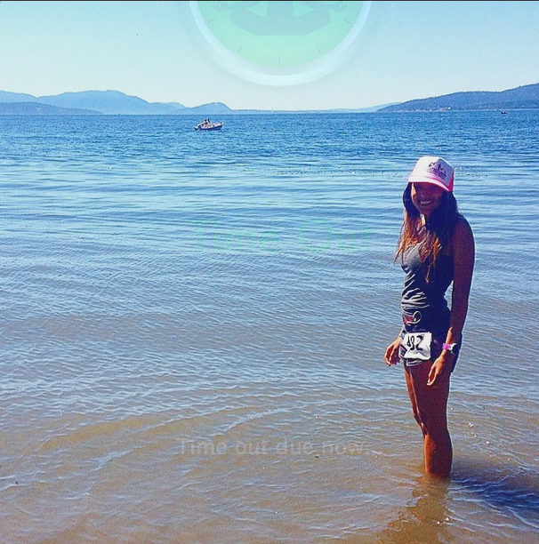
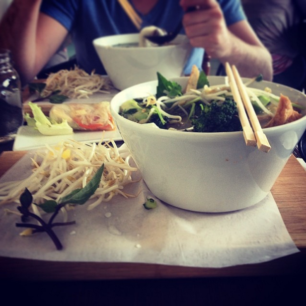

What I Live For
Mountains, running, food and snow!
 
When I'm not writing code, you would probably find me outside running, climbing, snowboarding, cycling or hiking. When I'm inside, I work with all kinds of data. This could include analysis, aggregation or architecting systems to handle the data. This past year my major focus has been on Scala and Apache Spark which is a distributed data processing engine.
I recently adopted a plant based diet and I'm always looking for new and exiting recipes to try out. I am a true believer in the importance of eating healthy and the power of food to heal. However, that doesn't mean I don't enjoy the occasional cookie or chocolate bar. Chocolate ice cream is my weekness.